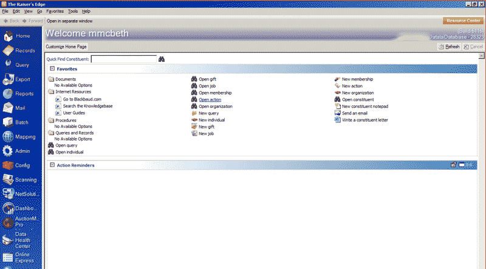
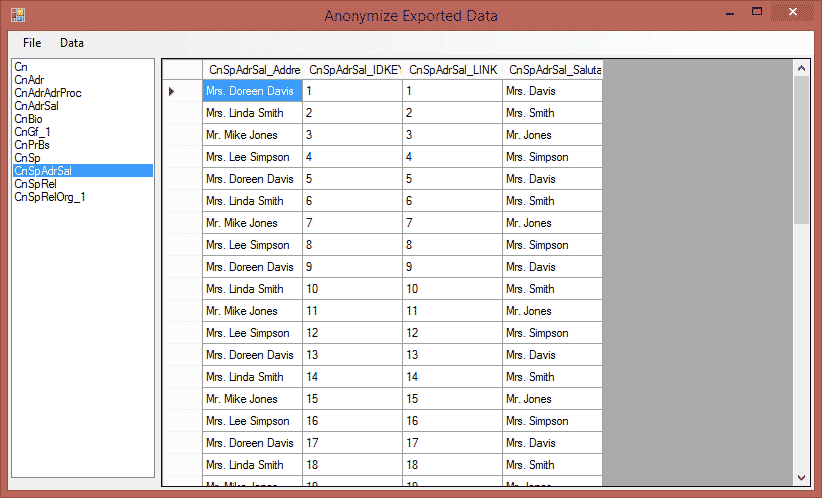

Highland Fundraising Solutions Welcomes Donor Relations Guru Partnership (read more...)×
Answers that fit
Your institution. Your needs. Your mission.
What is Highland FRS?
We are a full-service consultancy serving non-profit organizations. We specialize in database optimization to prepare institutions for capital campaigns and lead/assist with data integrity efforts. We offer a variety of services covering the range of institutional needs for advancement and development.Get in contact!
Find out how HFRS can help your organization
